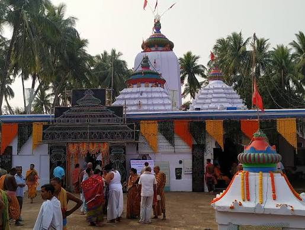
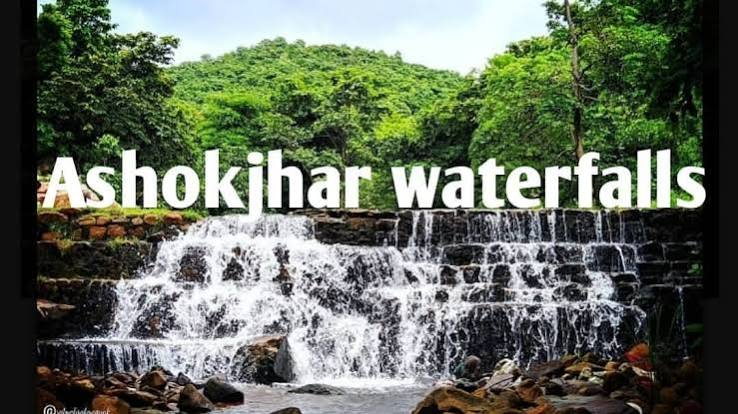
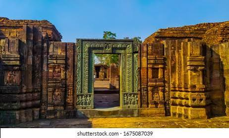
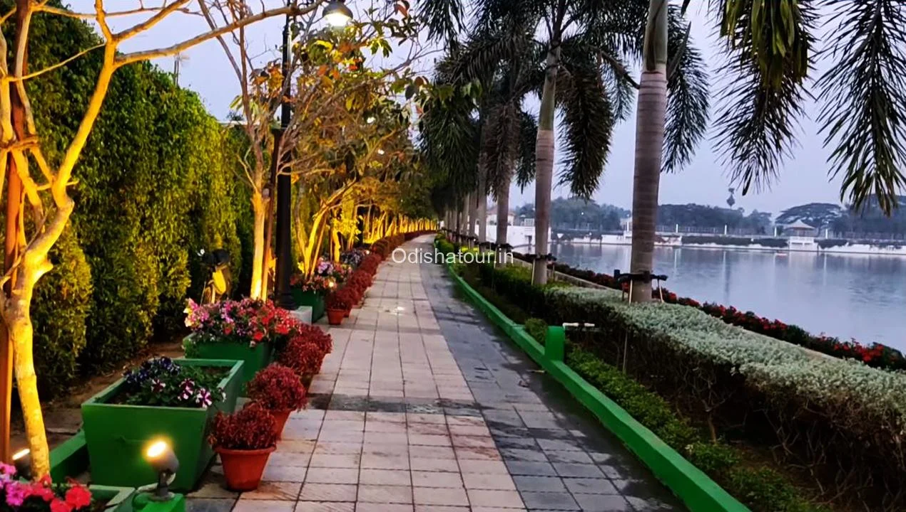
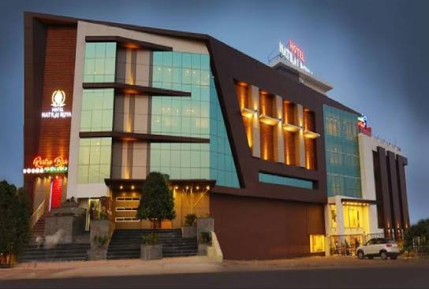
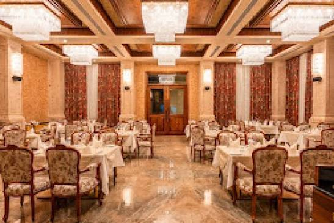
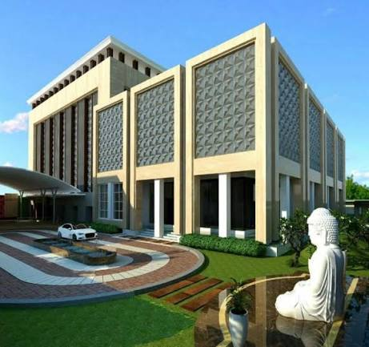

Temple
Maa Biraja Temple is one of the important ancient Hindu temples of Jajpur,Odisha.Jajpur is traditionally known as Biraja kshetra.

Asokajhar Waterfalls
Ashokjhar Waterfall (also spelled Ashokajhar) is a scenic, hidden natural retreat nestled in the dense deciduous forests of the Jajpur district in Odisha, India. It is highly regarded as a tranquil eco-tourism spot, an adventurous trekking destination, and a popular winter picnic ground.

Ratnagiri
Ratnagiri, located in the Jajpur district of Odisha, is the site of a majestic 5th-century Buddhist Mahavihara (monastery complex). Meaning the "hill of jewels," it sits peacefully on a hill between the Brahmani and Birupa rivers. Along with the nearby historic sites of Lalitgiri and Udayagiri, it forms the famous Diamond Triangle of ancient Buddhism in Odisha..

Kusuma park
Kusuma Park and Pond is a beautifully transformed 27-acre heritage park located right in the heart of Jajpur Town, Odisha.
Mahavinayak Temple
The Mahavinayak Temple is a famous temple in the Jajpur district of Odisha..

Odissi is one of the eight official classical dance forms of India, originating from the eastern coastal state of Odisha.

Hotel Brahmani: Hotel Brahmani is widely considered one of the premium premium hospitality choices in the Jajpur Road region of Odisha.Located strategically right on the Chorda Bypass (NH-215) in Byasanagar, it serves as an excellent stay for both business travellers visiting the Kalinganagar industrial hub and tourists exploring local heritage.

Raja-Rani:Rajarani Niramisa Bhojanalaya (frequently referred to as Raja Rani Hotel) is a well-known, long-standing pure vegetarian restaurant located in Panikoili within the Jajpur district. .

Hotel Jajati: Jajati Courtyard is a premium 4-star hotel located in Byasanagar, Jajpur Road, Odisha, featuring upscale amenities like two multi-cuisine restaurants, a rooftop bar, a modern gym, and an outdoor swimming pool.
Contact Us
We’d love to hear from you! Please fill out the form below to get in touch.